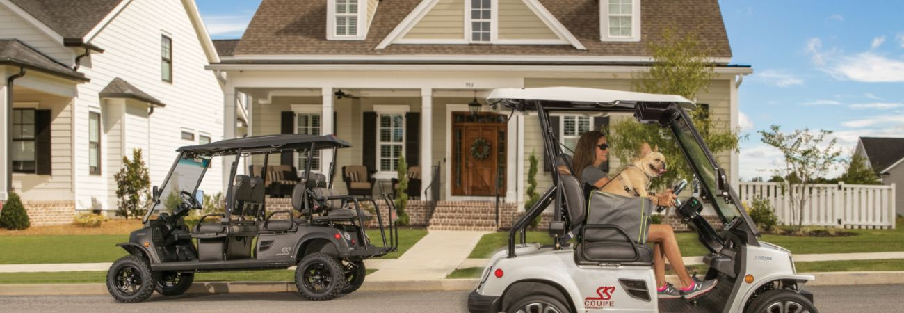
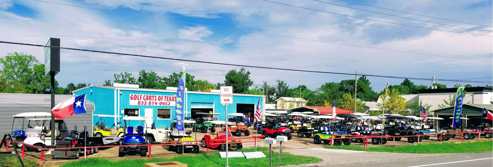

Family-owned service on the Gulf Coast
A family-owned shop with a full service center, serving drivers from our Bacliff and Galveston locations.
Family-owned on Hwy 146, 2 miles south of Kemah.
Golf carts are no longer just for golf
Golf carts are today's fun way to get around, whether you're enjoying the neighborhood, heading to the beach or making a quick trip to the store. Golf Carts of Texas has been providing Clear Lake, Galveston, Kemah and the surrounding areas with a popular and stylish way to get around.
We specialize in custom golf carts that fit each client's personality, with custom paint, lift kits, wheels, tires, lights and much more. If you can imagine it, we can build it. From mild to wild, we do it all.
Golf Carts of Texas is an authorized dealer for Tomberlin, Sky Electric Vehicles and Trojan Batteries. We service all makes and models for business and personal use, and stock a large variety of parts and accessories. Every custom build and new cart includes a bumper-to-bumper warranty.
We're just 2 miles south of Kemah at 3615 Hwy 146 in Bacliff. Stop by any time during business hours to explore our inventory of new, used and ready-to-go custom carts.
We still do business the “Texas” way, where a handshake means it's a done deal.


“Visited Golf Carts of Texas looking for a cart upgrade. The staff is friendly and knowledgeable about the carts on their lot and offered a fair trade in price on our old cart. Our new cart was delivered to us in Galveston on a Saturday afternoon and noticed an issue that would not let the cart drive into the garage. I thought I would have to leave the cart on the driveway until Tuesday (business is closed Sun and Mon) - the delivery driver came back on Sunday and made the needed modifications! If you are in the market for a new golf cart or an upgrade please check out Golf Carts of Texas”
“My wife and I went there not knowing what to buy. Andrew was very knowledgeable and helpful, explaining to us the different types of models and features on each. Once the financing was finalized, our cart was delivered a few days later. I highly recommend going if you're in the market for a golf cart.”
“I needed a transport of my Golf Cart from San Leon to Friendswood. I was amazed at the professional -quick- caring transportation I received. The price was below expected with a driver who was very knowledgeable on Golf Carts who took time to explain my questions I was also updated on the schedule time of this transport along with taking their time to answer my questions by phone or text. I highly recommend Golf Carts of Texas. They value their customers and go beyond expectations. Thank you”
See more customer reviews on our Google Business listing, or leave one after your visit.
A look at our family-owned shop. Watch here, or open the video on Facebook.
A family-owned shop with a full service center, serving drivers from our Bacliff and Galveston locations.
25 years strong, with sales in the front and service in the back. Call the Galveston location at 409-256-7717.
Walk in for a new cart, and we've got a full service shop in the back when you need us.
Bring us your ideas. We'll make it happen.